发信人: ddf (ddf), 信区: outdoor
标 题: 崀山风光梅子坝
发信站: 饮水思源 (2013年08月21日22:20:27 星期三)
坝下面拍的，坝上有些垃圾没清理
坝下面有石洞，小时候经常伸手去抓鱼
左边那山翻过去就是我家了，那个高耸的大石头叫鹅公寨
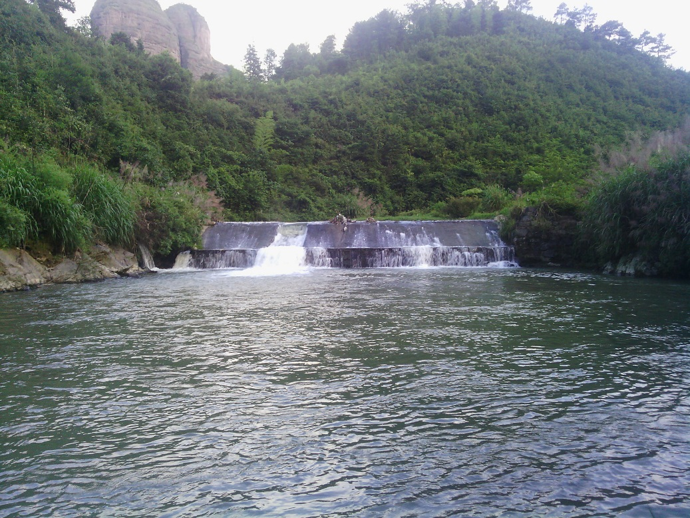 screen.width - 200){this.width = screen.width - 200}">
小麻雀一只，其实当时里面有一群
它不懂什么叫危险，我抓它它没有反应
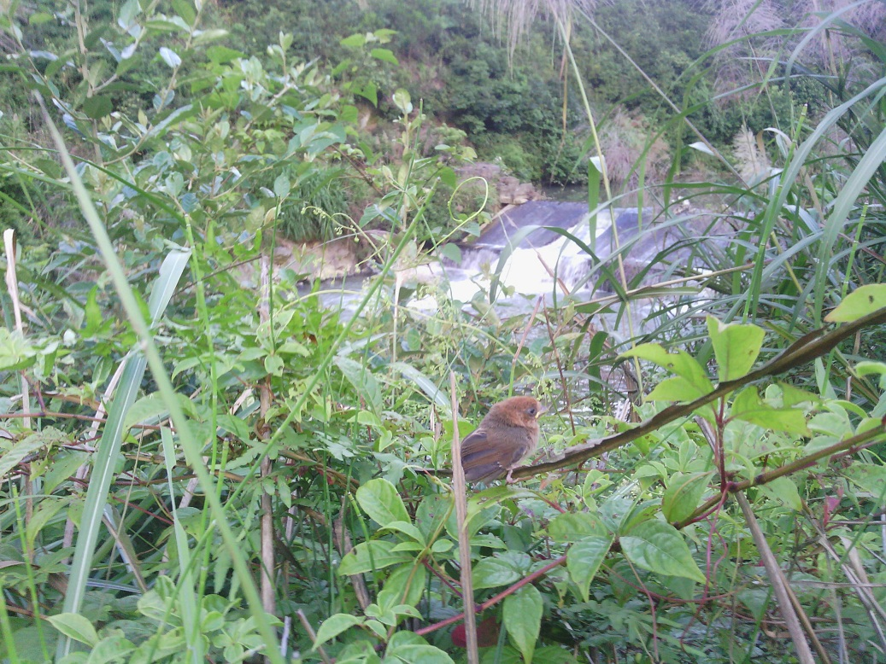 screen.width - 200){this.width = screen.width - 200}">
我家的三条狗：最近的是大母狗，另外两只是其后代
这个短尾好像可以遗传，但不知是显性还是隐性
田里那我家的牛，一共三头
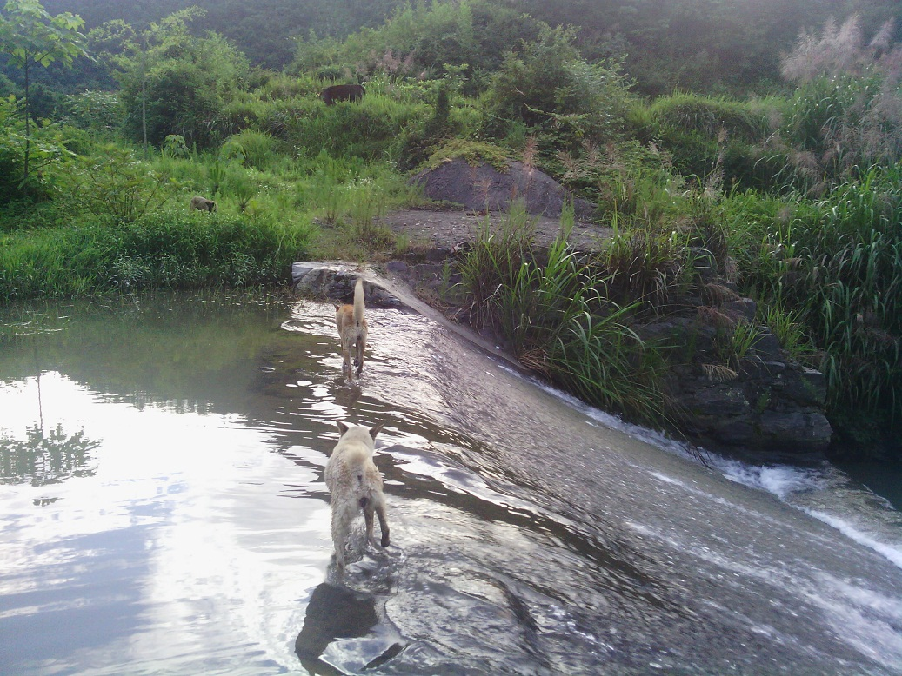 screen.width - 200){this.width = screen.width - 200}">
这个是泄洪用的，现在基本不用
坝里面有甲鱼、鲶鱼、鲫鱼、鲤鱼、羊羔鱼、水仙鱼、泥鳅、青蛙。。。。。。
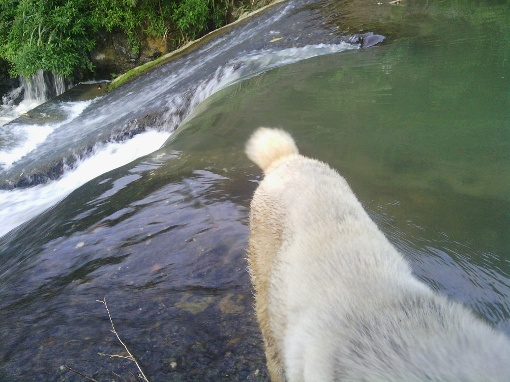 screen.width - 200){this.width = screen.width - 200}">
白练
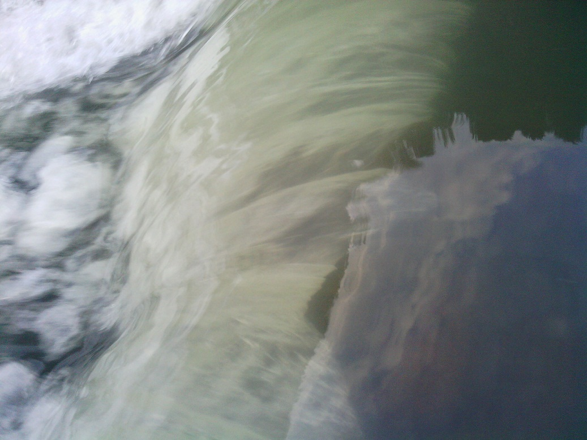 screen.width - 200){this.width = screen.width - 200}">
水花
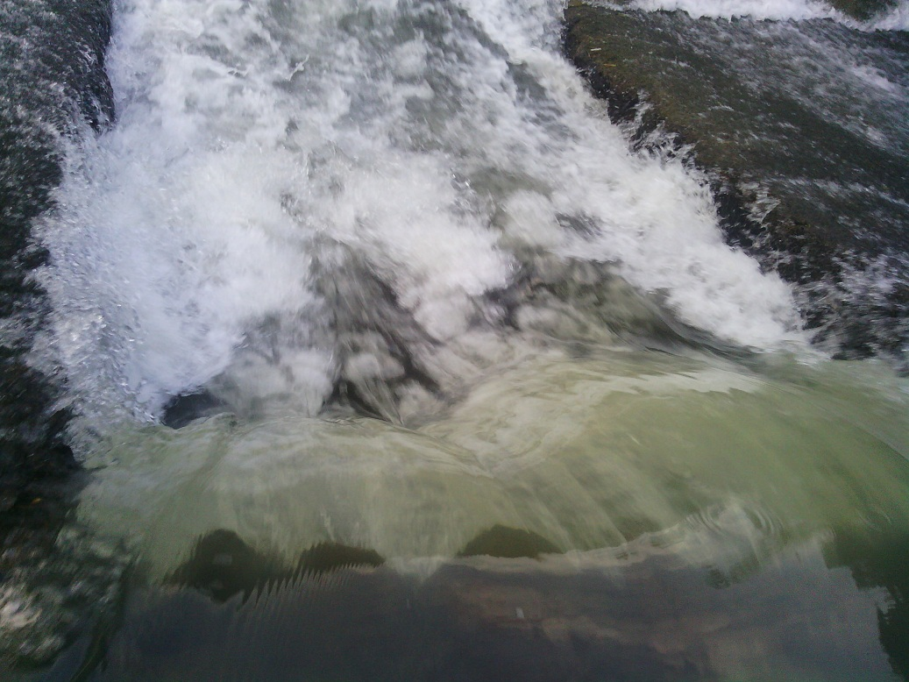 screen.width - 200){this.width = screen.width - 200}">
小瀑布，要是大一点人可以进去的
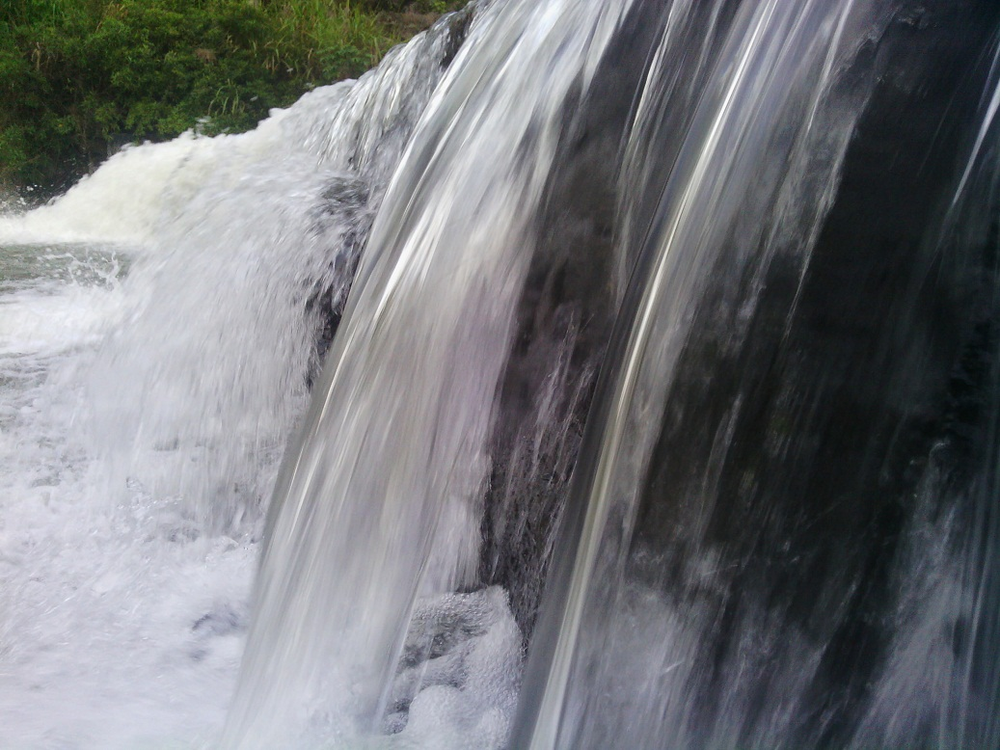 screen.width - 200){this.width = screen.width - 200}">
这个是我的毛腿
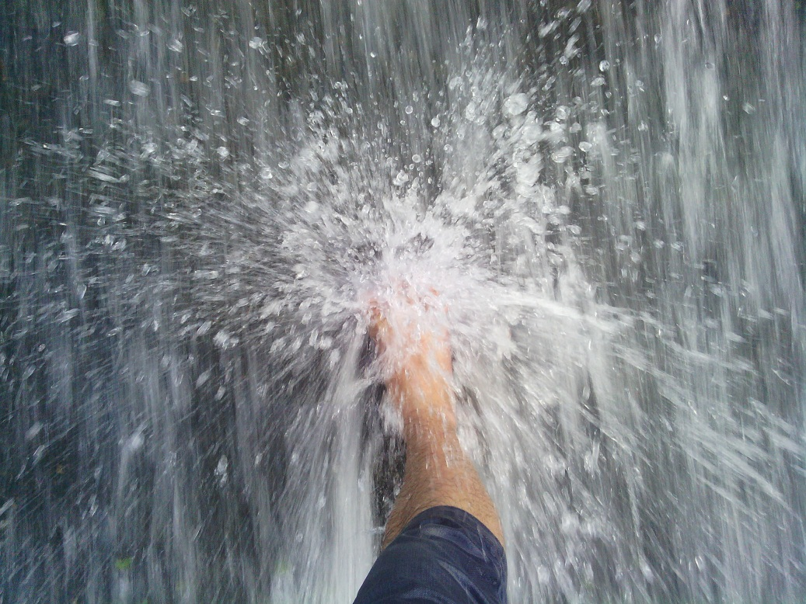 screen.width - 200){this.width = screen.width - 200}">
毛腿二
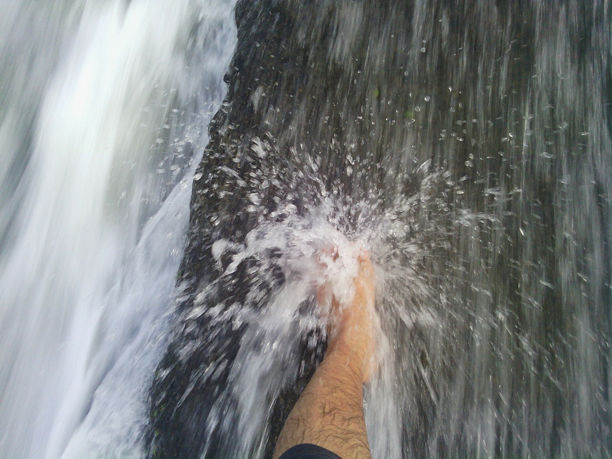 screen.width - 200){this.width = screen.width - 200}">
大江东去
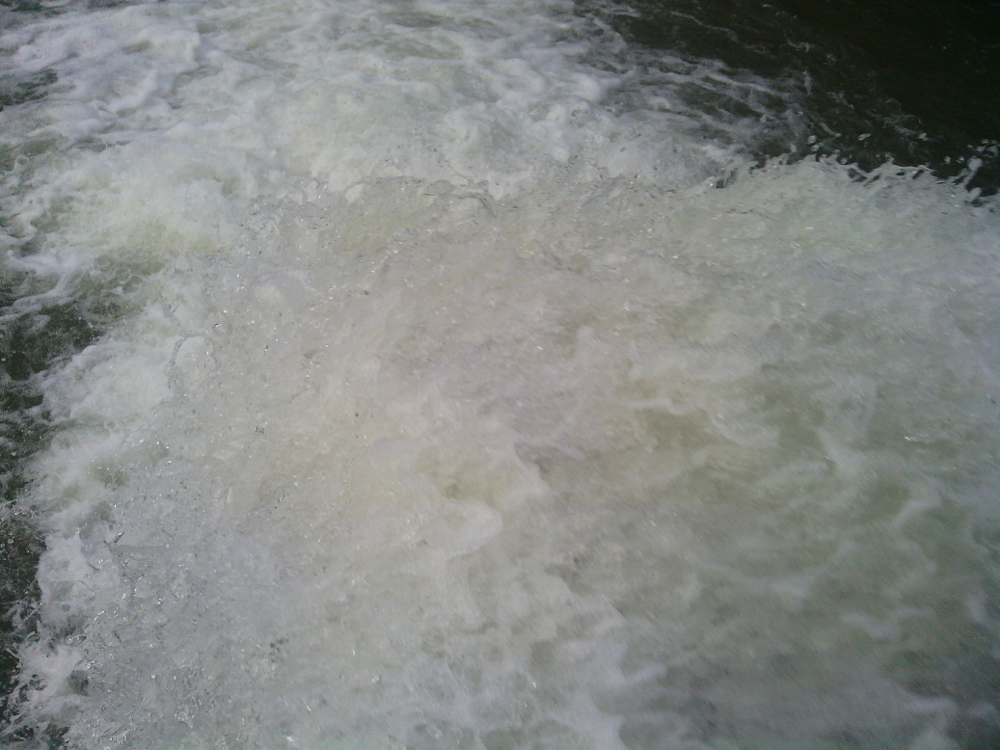 screen.width - 200){this.width = screen.width - 200}">
你是不是也想躺这里洗礼一下？
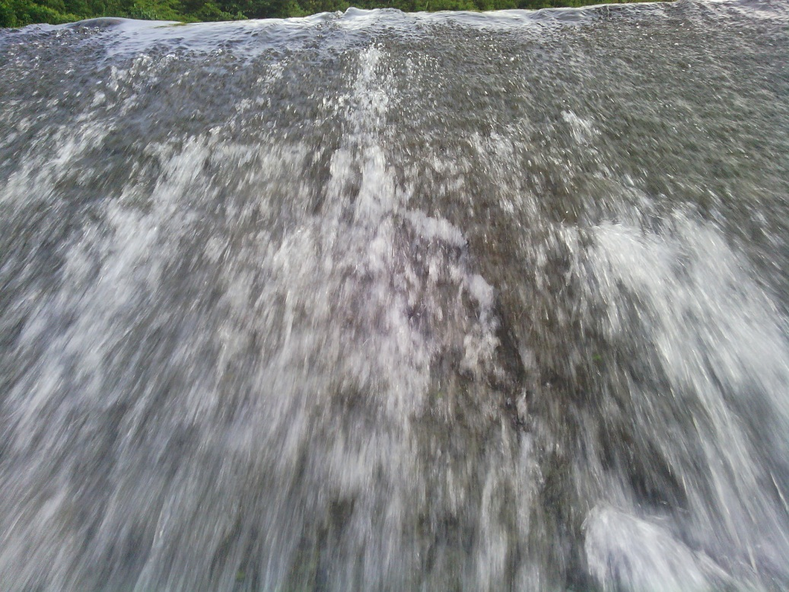 screen.width - 200){this.width = screen.width - 200}">
--
※ 来源:·饮水思源 bbs.sjtu.edu.cn·[FROM: 111.186.4.233]
※ 修改:·ddf 于 2013年08月23日13:51:54 修改本文·[FROM: 111.186.8.7]
|